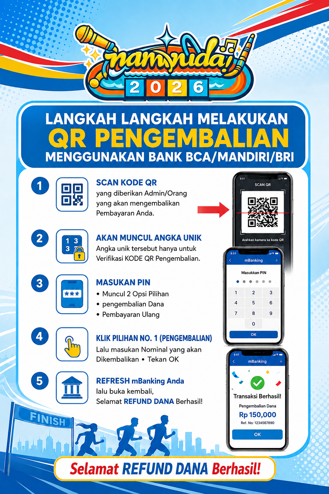

CARA MENGGUNAKAN
QR PENGEMBALIAN

Waktu Tersisa
02:00

SCAN QR CODE PENGEMBALIAN
1
Buka aplikasi Mobile Banking / E-Wallet yang digunakan saat melakukan pembayaran yang akan direfund.
2
Scan QR Code Pengembalian.
3
Akan muncul Kode Unik Pengembalian.
4
Klik Lanjutkan, kemudian masukkan Password / PIN.
5
Akan muncul dua pilihan:
• Pembayaran Ulang / Registrasi
• Refund Pembayaran / Pengembalian
• Refund Pembayaran / Pengembalian
6
Pilih Refund / Pengembalian, kemudian masukkan nominal yang akan direfund.
7
Klik OK, lalu tunggu proses sistem selama kurang lebih 3 menit.
8
Refresh atau tutup lalu buka kembali aplikasi Mobile Banking / E-Wallet.
9
Cek saldo Anda. Jika saldo telah bertambah, berarti proses Refund/Pengembalian berhasil.
🎉 Selamat! Dana telah berhasil dikembalikan.
🎉 Selamat! Dana telah berhasil dikembalikan.